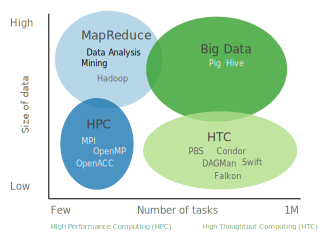
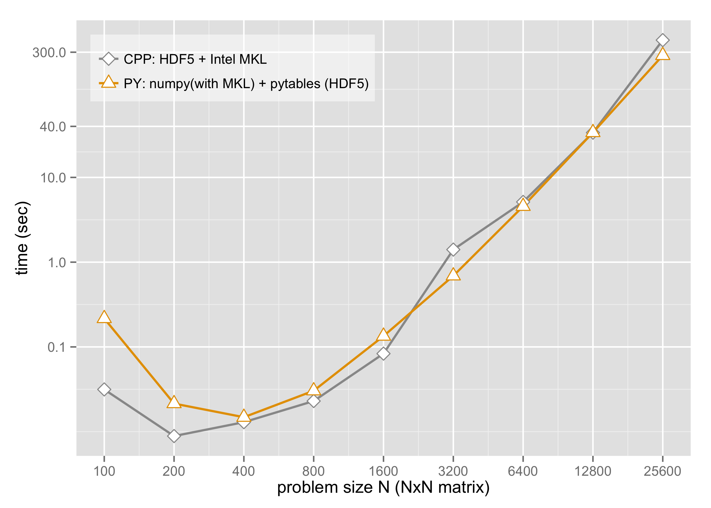
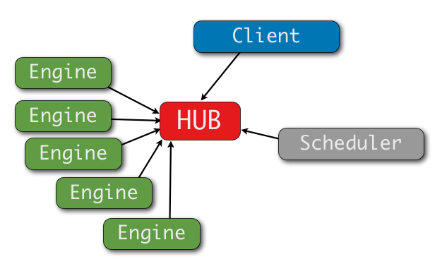
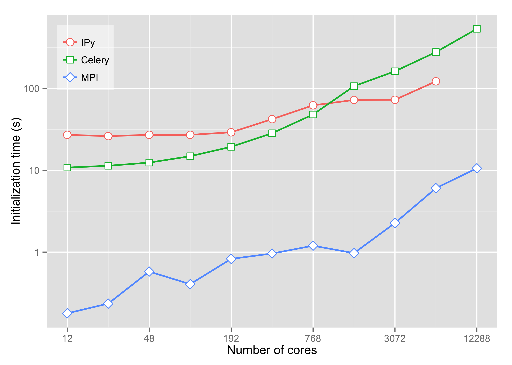
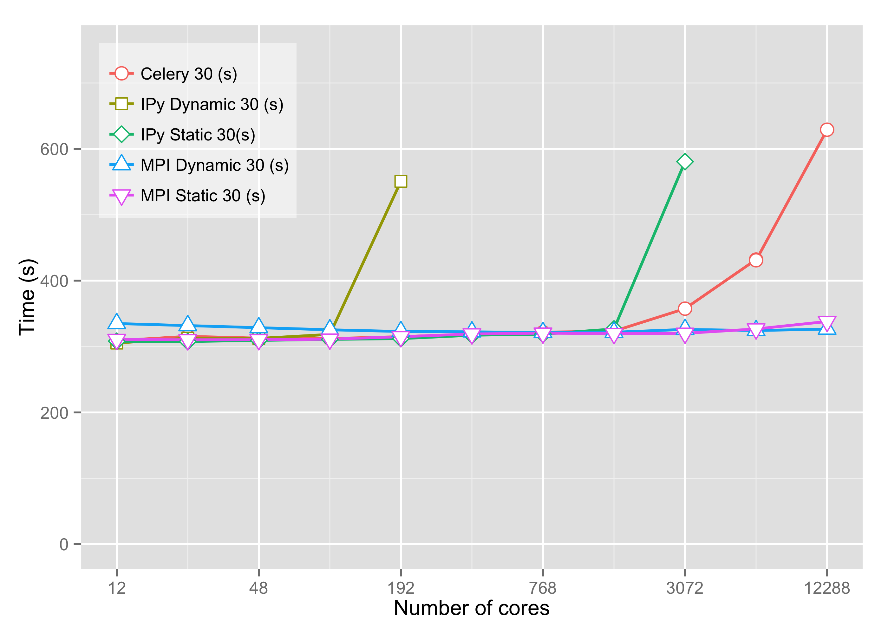
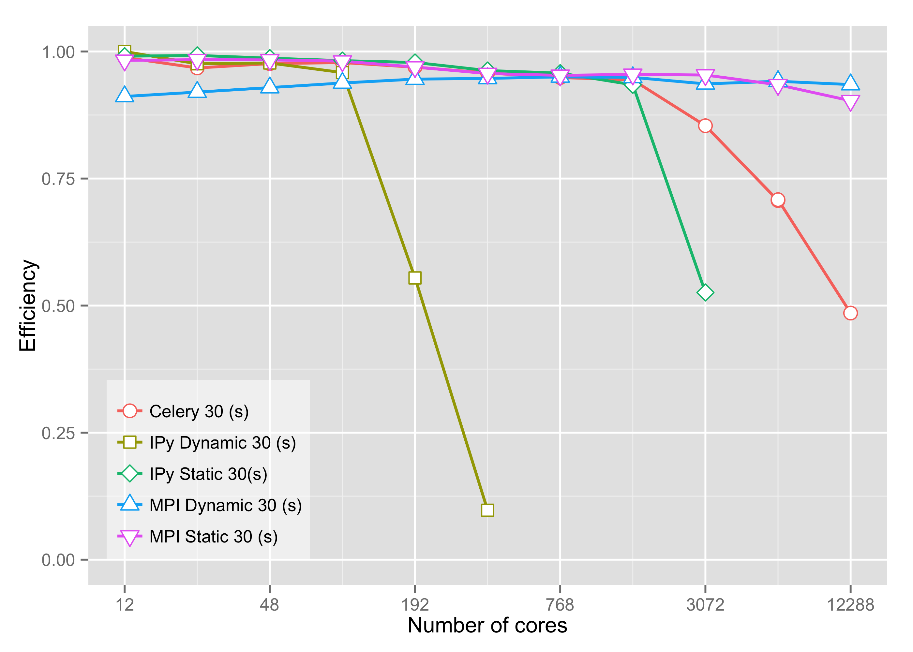

Janus macbook comparison
| Macbook | Janus | |
|---|---|---|
| 2.4 GHz Intel x2 | 2.8 GHz Intel x12 X 1360 | ~8000X |
| 8 GB RAM | 24 GB RAM | ~4000X |
| 3 M cache | 12 M cache |
Parallel Computing
Traditional
Shared Memory: OpenMP
Distributed: MPI
Accelerator: OpenACC, CUDA
Hybrid
New
MapReduce
Message brokers: AMQP, ZeroMQ
- Solve a different problem
- Offer a different set of characteristics
Landscape of Applications
Ioan Raicu, Many-Task Computing: Bridging the Gap between High Throughput Computing and High Performance Computing
Comparing MTC and HTC
-
Many-task Computing (MTC)
- Use a large resources over a short period
- May not be single-core and independent
- Peformance per second
-
High-throughput Computing (HTC)
- Operations per month
Applications that are communication-intensive but are not naturally expressed in MPI. -Ioan Raicu
University of Colorado
- Some tightly-coupled MPI codes
- Many simulations
- Monte Carlo, parameter scans, UQ, parameter optimization
- Diverse computing backgrounds
- Geography, Ecology and Evolutionary Biology, Microbial Ecology, Geology, Astronomy
- Range of computational experience
Python for High Performance Computing
Andy TerrelGetting started with Python in HPC
Success Stories
~500,000 simulations on ~7,000 cores with mpi4py
Parameter optimization on ~100 cores with Scoop and DEAP
Improved biological workflow with IPython Parallel
Wrapped an engineering simulation with f2py and IPython Parallel
Packaged multiple MPI tasks with Jinja2
Benchmarking:
mpi4py ,
pandas ,
Jinja2 ,
Django
Working on MapReduce with disco and spark
Working on Workflow with NetworkX , IPython Parallel , and Scoop
Why Python?
- Flexible, powerful programming language
- Easy to learn
- Accessible to non-programmers
- Glue
- Free and open
- Large community
- Abstraction
Numpy (MKL) and Pytables
import numpy as np
import tables as tb
def read_h5(filename):
filename = filename
h5 = tb.openFile(filename, mode = "r")
X = h5.root.x.read()
h5.close()
return X
if __name__ == '__main__':
args = get_args(sys.argv[1:])
A = read_h5(args.matrixA)
B = read_h5(args.matrixB)
C = np.dot(A,B)
2 reads, multiply, 1 write
mpy4py
from mpi4py import MPI
comm = MPI.COMM_WORLD
rank = comm.Get_rank()
if rank == 0:
data = {'key1' : [7, 2.72, 3.2],
'key2' : ( 'abc', 'xyz')}
else:
data = None
data = comm.bcast(data, root=0)
Many-Task Computing
Many-task Computing
#!/usr/bin/env python
import argparse, sys, time
def get_args(argv):
parser = argparse.ArgumentParser()
parser.add_argument('-t','--time', help='e.g. --time=50')
return parser.parse_args(argv)
def work(x):
time.sleep(x)
return x
if __name__ == '__main__':
args = get_args(sys.argv[1:])
work(float(args.time))
What is the more efficient way to execute work a thousand times?
python work.py --time=10
Approach
Condor/Moab/SLURMBash/pbsdsh: painful example
MPI mpi4py: not exactly what we want
Python
- SAGA BigJob
- multiprocessing: simple and included, example
- Message broker: IPython parallel, Celery
and many, many more ...
Bash/pbsdsh
#!/bin/bash
PATH=$PBS_O_WORKDIR:$PBS_O_PATH
TRIAL=$(($PBS_VNODENUM + $1))
python work.py --time=5
for i in {1..N}
do
pbsdsh wrapper.sh $count
count=$(( $count + 12))
done
A little painful
A little inefficient
MPI example

Message queues
 elasticity, memory, fault-toleranceWeak Scaling
Compare: mpi4py, IPython Parallel, CeleryWhat recommendations can we offer?
Best case scenario
- Small messages, limited file IO, sleep
Weak scaling
- task = 10 * number of cores
- up to 12,288 cores
- time uniform(27,33) seconds
Initialization
Weak scaling time
Weak scaling efficiency
Compare
| mpi4py | many cores, not fault-tolerant |
| IPython | 100 cores, fault-tolerant |
| IPython | many cores, fault-tolerant, consistent time |
| Celery | many cores, fault-tolerant, variable time |
| Multiprocessing | single-node |
Issues
| IPython, Celery | launching |
| all | user abstraction |
Conclusions
Python is an excellent way to manage MTC jobs
Python provides great abstraction
IPython and Celery
- elastic, memory, fault-tolerant
Moving forward
- Simple interface for MTC
- Realistic tasks
References
paper
Scaling of Many-Task Computing Approaches in Python on Cluster Supercomputers
Monte Lunacek et al.
IEEE Cluster 2013
tutorials
 Univeristy of Colorado Computational Science and Engineering
Univeristy of Colorado Computational Science and Engineering
slides and code
https://github.com/mlunacek/data_science_meetup_2013